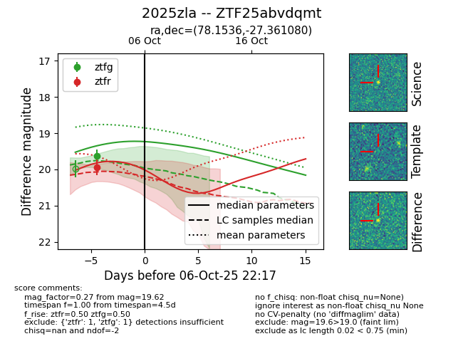
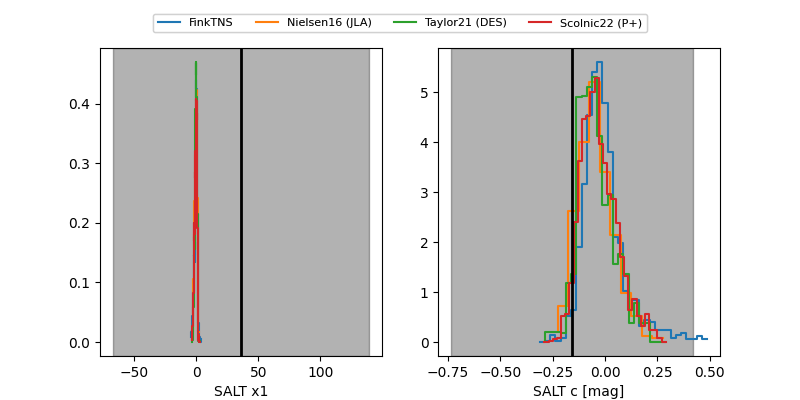

FINK: ZTF25abvdqmt
Lasair: ZTF25abvdqmt
ALeRCE: ZTF25abvdqmt
TNS: 2025zla
YSE: 2025zla
ZTF25abvdqmt (ztf,fink)
2025zla (tns,yse)
equatorial (ra, dec) = (78.1536,-27.36108)
galactic (l, b) = (229.4827,-32.67918)


last ztfg=19.62, ztfr=19.93
1 ztfg, 1 ztfr detections